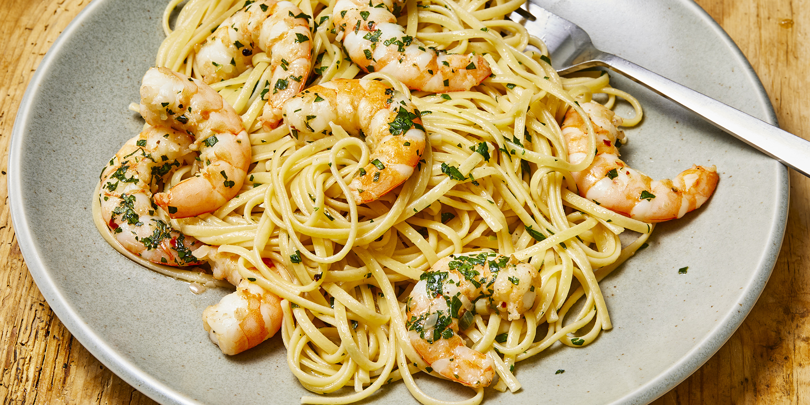

Shrimp Scampi with Pasta

Description
Shrimp scampi with pasta is the ultimate seafood pasta dish.Works with any
pasta; angel hair is less filling.
Ingredients
- 1 (16 ounce) linguine pasta
- 2 tablespoons butter
- 2 tablespoons extra-virgin olive oil
- 2 shallots, finely diced
- 2 cloves garlic, minced
- 1 pinch red pepper flakes (optional)
- 1 pound shrimp, peeled and deveined
- 1 pinch kosher salt and freshly ground pepper
- 1/2 cup dry white wine
- 1 lemon, juiced
- Extra-virgin olive oil to taste
- 1/4 cup finely chopped parsley leaves
Steps
-
Bring a large pot of salted water to a boil; cook linguine in boiling
water until nearly tender, 6 to 8 minutes. Drain.
-
Melt 2 tablespoons butter with 2 tablespoons olive oil in a large
skillet over medium heat. Cook and stir shallots, garlic, and red pepper
flakes in the hot butter and oil until shallots are translucent, 3 to 4
minutes. Season shrimp with kosher salt and black pepper; add to the
skillet and cook until pink, stirring occasionally, 2 to 3 minutes.
Remove shrimp from skillet and keep warm.
-
Pour white wine and lemon juice into skillet and bring to a boil while
scraping the browned bits of food off of the bottom of the skillet with
a wooden spoon. Melt 2 tablespoons butter in skillet, stir 2 tablespoons
olive oil into butter mixture, and bring to a simmer. Toss linguine,
shrimp, and parsley in the butter mixture until coated; season with salt
and black pepper. Drizzle with 1 teaspoon olive oil to serve.